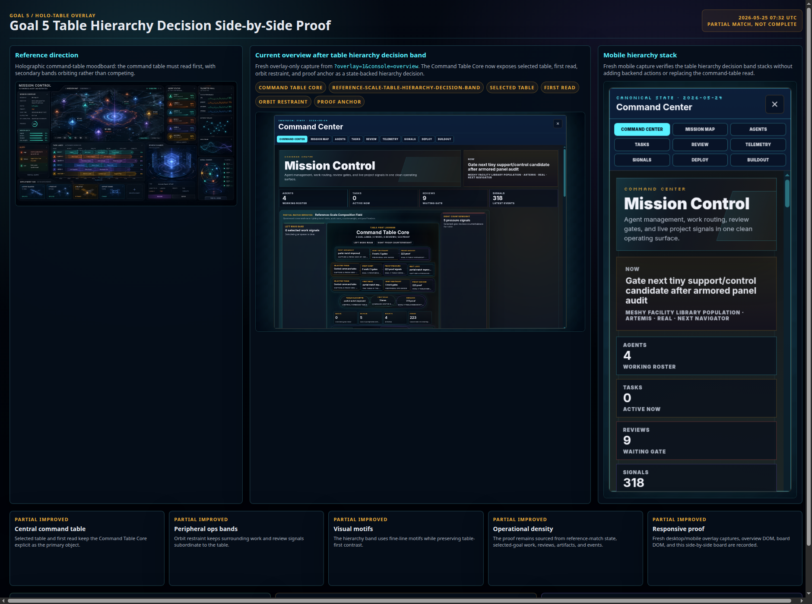
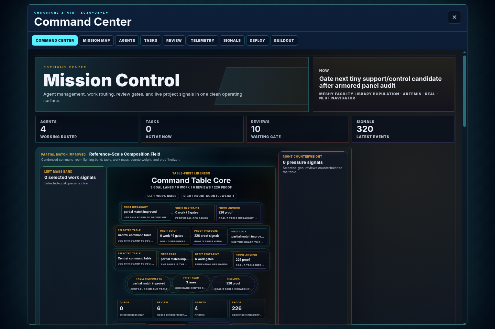
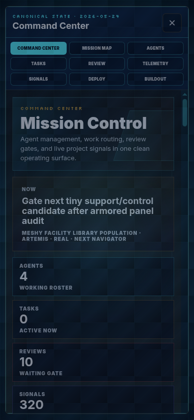

Latest proof board
The latest side-by-side proof asks whether peripheral density, motif contrast, or table hierarchy needs the next pass.

Goal 5 / Holo-table overlay
The latest side-by-side proof asks whether peripheral density, motif contrast, or table hierarchy needs the next pass.

Fresh overlay-only capture from ?overlay=1&console=overview. Table hierarchy is now explicitly locked, so the next pass should return to peripheral density without adding fake actions.

Mobile stack remains readable; the next density pass should focus on peripheral instrument density around the table, not new backend actions.

After table hierarchy and motif contrast passes, peripheral ops density is the next useful reference-match pressure point around the Command Table Core.
The table hierarchy decision band and side-by-side proof are recorded; do not stack another table-first band before checking density.
Motif contrast has a decision band and proof board. Keep contrast state-backed while density is checked next.
This board turns the previous open next-step question into a concrete Goal 5 follow-up.
No reference-complete claim. This records a next-gap decision only.
Use selected-goal tasks, reviews, agents, artifacts, and events to sharpen peripheral density without fake backend actions.